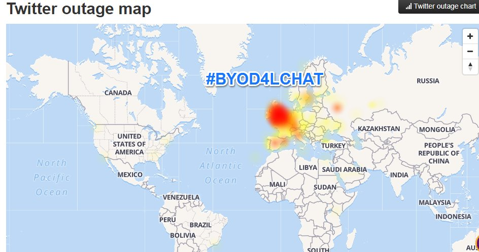
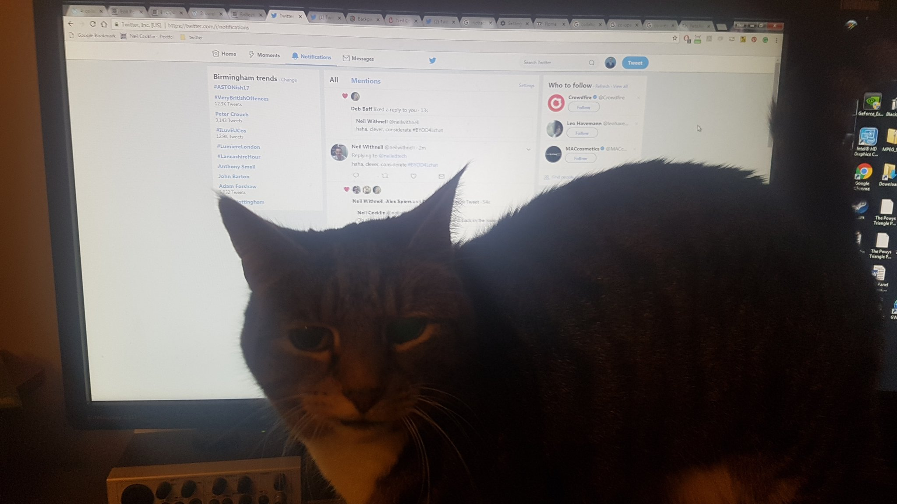
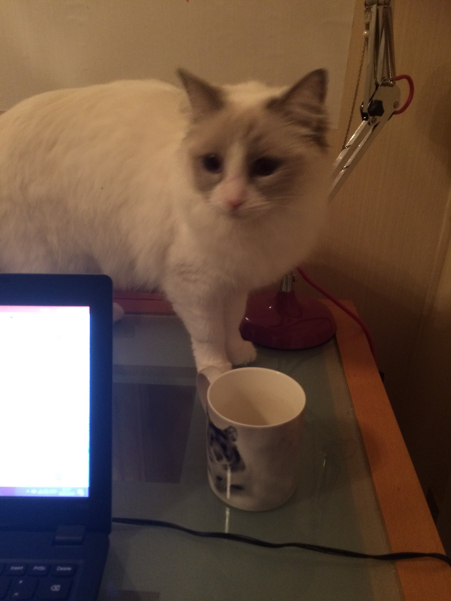

- Cold outside isn't it? Why not warm yourself by the digital fireplace that is #BYOD4Lchat @neilwithnell and @SFaulknerPandO will be keeping you company.
- Who’s joining us for #BYOD4Lchat this evening?! One hour to go. Tonight’s topic is collaborating & community.
- Roll up, roll up! Come and join this fantastic community for the penultimate #BYOD4Lchat we can’t wait to meet you ..... it could lead to the most awesome collaboration. See ya there 😉 https://twitter.com/byod4l/status/954065870040350720 …
- another #BYOD4Lchat starting in 15 minutes, just time to get ready pic.twitter.com/9NzygH0Y4x
- We will start with a question Q1 and ask that you start your reply with A1 and be sure to use #BYOD4Lchat
- Having lots of problems loading twitter on my desktop for some reason this evening. :( #BYOD4Lchat
- Q1 In your understanding what does ‘collaborating’ entail, how is it different from ‘co-operate’ or ‘co-create’? #BYOD4Lchat
- @neiledtech Me too What’s going on! #BYOD4Lchat
- very slow, trying our patience :) #BYOD4Lchat https://twitter.com/ADeaves/status/954084156425850880 …
- A1 means truly working together with a shared goal, #BYOD4Lchat https://twitter.com/BYOD4L/status/954084128747675648 …
- #BYOD4Lchat I had a problem with twitter as well
- @scottturneruon its slowly coming back Scott #BYOD4Lchat
- A1 #byod4lchat Working together to on shared aims / objectives. Or maybe different ones within the same project?
- agreed, co-operate means to be nice, collaboration can be more challenging #BYOD4Lchat https://twitter.com/ADeaves/status/954085104011358209 …
- Not sure but for me it is usually about a more equal partnership #BYOD4Lchat https://twitter.com/BYOD4L/status/954084128747675648 …
- #byod4lchat Is it the weather causing chaos 🌨💨
- @scottturneruon like this Scott #BYOD4Lchat
- Can you collaborate in an unequal way? #byod4lchat https://twitter.com/scottturneruon/status/954085472011202561 …
- Q2 How do you link "collaborate" with the other C's ? #BYOD4Lchat
- @neiledtech Hi Neil, is this still a problem ? #byod4lchat ?
- @BYOD4L A1 The question feels like a fetishisation of semantics. If pressed, I think co-operate is having a similar end outcome, the other 2 are more like working on a project or "thing" together. #BYOD4Lchat
- @BYOD4L A1 those with common interests who choose to work together towards a common goal. Sharing responsibility and credit #BYOD4Lchat
- @debbaff Seems to be better now, actually getting notifications. #BYOD4Lchat
- #BYOD4Lchat A1: Collaborating for me is working with others in a variety of ways to the same goal, co-operating involves following instructons or orders and co-creation involves developing something.
- Hello, finally got on #BYOD4Lchat have been collaborating all week on events, special issue I'm co-editing + potential ones from @BYOD4L
- A1 #byod4lchat for me I think it has to also do with the goals / outcome being shared also ?
- @alexgspiers Yes but I think you more easily co-create and co-operate in an unequal way but if we collaborate it always feels to me more of a personal investment - might be semantics #byod4lchat
- A2 #BYOD4Lchat Collaboration is the middle intersection I guess. You collaborate when you co-create and you also can also collaborate when you co-operate
- It may be a little quiet in the #byod4lchat tonight. There is a big red blob blocking twitter in the UK pic.twitter.com/fMnMYRHevl
- @BYOD4L A2 I'd say collaborating is doing something together, shared ownership. Co-operate makes me think of doing something for a common aim, co-create - people working on the same thing without necessarily collaborating on every aspect, eg Wikipedia #BYOD4Lchat
- A2 they are all relevant, need communication, etc to have effective collaboration #BYOD4Lchat https://twitter.com/BYOD4L/status/954086620310974466 …
- @ADeaves I'm wired up to an ECG thing so thought it that! It is Winnie-The-Pooh day today so assume that's why it's so blustery #byod4lchat
- @BYOD4L A2 #BYOD4Lchat without connections and communicating well it is difficult to see how you can gave successful collaboration ... I'd also like to add another C too - Care ...
- @BYOD4L A2 without the other 4 C’s there would be no collaboration. #BYOD4Lchat
- you just did, cool (another C) #BYOD4Lchat https://twitter.com/debbaff/status/954087741100347399 …
- @scottturneruon I agree - just playing devils advocate - cooperation can be done willingly or through gritted teeth #byod4lchat
- @BYOD4L A2. Collaboration requires co-operation and may lead to co-creation. They all sound positive to me! #BYOD4Lchat
- A2 collaboration is improved by the other C's e.g. Curating Improves outcomes Clear Communication Can all be done on devices #BYOD4Lchat
- @neilwithnell haha ... oops .. might have started something there ... #byod4lchat Cuddle anyone ?
- Oh all the themes start with C! hahahahh .....and back in the room. #BYOD4Lchat
- @neiledtech haha, clever, considerate #BYOD4Lchat
- Q3 What mobile tools and platforms do you use, and how, for collaboration with your colleagues? #BYOD4Lchat
- A3 Google drive, Dropbox mainly #BYOD4Lchat https://twitter.com/BYOD4L/status/954089144833265664 …
- @BYOD4L #BYOD4Lchat A3 google + hangouts, google drive
- My own furry friend wants in tonight. #BYOD4Lchat pic.twitter.com/EHq25Mvrs6
- @BYOD4L A3 Usually Skype, Google Docs and OneDrive depending on the activity. #BYOD4Lchat
- A3 Working on presentations or documents - Google products. Collaborating on projects - Twitter is the starting place. #BYOD4Lchat
- all welcome, though @debbaff might start posting pics now #BYOD4Lchat https://twitter.com/neiledtech/status/954089699177566208 …
- @BYOD4L A3 Google Docs, Twitter including Messages ( invaluable for things like BYOD4L back channel) Padlet, Whats App, Hangouts, Zoom etc #BYOD4Lchat
- A1 letting go of egos... #byod4lchat
- @BYOD4L A3 We discussed collaborating on submitting a paper for a conference on twitter @KSavage_Strath @clairemtimmins, does that count? #BYOD4Lchat
- @BYOD4L A3 #BYOD4Lchat There are only 280 characters! I use skype for business to communicate with colleagues, OneNote Classroom to collaborate on resources with my immediate team, google drive/docs to collaborate on documents with the wider team. 1/2
- @BYOD4L A3 Google docs, for writing and planning also slides for shared presentation. Also use it during learning design workshops to capture input from various groups. Try to use Office 365 not always as successfully. #BYOD4Lchat
- A3 #BYOD4Lchat I also use Pocket for curating resources and materials to share with like minded colleagues. Plenty of others too. 2/2
- Q4 When you design learning activities do you encourage your students to collaborate using their own mobile devices? If yes, how? #BYOD4Lchat
- @neilwithnell Hahah ... as if by magic the other furry one has appeared ... although more interested in the mug #byod4lchat pic.twitter.com/P0e8VUwTuL
- A4 good question, not often enough #BYOD4Lchat https://twitter.com/BYOD4L/status/954090551900557314 …
- @BYOD4L A3 MS Teams with the integration to Office365, to then mostly use OneNote and Planner. Have used google docs in the past. Some use of Box. #BYOD4Lchat
- @BYOD4L #BYOD4Lchat A4 used padlet to create shared responses to questions in class Used tweetchats but probably not true collaboration?
- #BYOD4Lchat Probably more just sharing information https://twitter.com/ADeaves/status/954091208808255488 …
- great to hear Amanda, sounds like collaboration to me #BYOD4Lchat https://twitter.com/ADeaves/status/954091208808255488 …
- @BYOD4L A4 #BYOD4Lchat It depends on the activity. In a training session yesterday I encouraged the participants to contribute to a padlet and an answergarden question
- A4 Have used Google docs, Wikis and Padlet in the past to build body of knowledge collaboratively #BYOD4Lchat
- @BYOD4L A4 yes. Most recently I set an assignment using Hudl technique a sports performance app. We used the app to record and analyse gait, the students collaborated sharing the video and annotating the stills which were then used in a group report #BYOD4Lchat
- @SusanMGreig @alexgspiers @BYOD4L #BYOD4Lchat A4 trying google docs but have problems with comments etc not saving for some of the authors? Anyone else experienced this?
- A3 Dropbox mainly. A4 Students enjoy Facebook messenger. Need to introduce them to more resources! #BYOD4Lchat
- @BYOD4L A4 Never have. Recently taken on a much greater CPD role and wondering about how I could weave this into future workshops for staff. #BYOD4Lchat
- @alexgspiers I used Google Doscs to do this in the past but usually on desktop machines. #BYOD4Lchat
- @Livuniphysio @SusanMGreig @alexgspiers @BYOD4L seems to work when I use it, do others have a google account? might be that, though just guessing? #BYOD4Lchat
- A4 #BYOD4Lchat have asked students to contribute to a padlet by posting links to resources they have created with their own devices ..
- @BYOD4L A4 That's such an interesting question. I work run CPD and training events for staff, and I can't think that I've done this. Must look out for appropriate opportunities. #BYOD4Lchat
- @gwenffrwd or go to where the students are....#BYOD4Lchat
- @SFaulknerPandO @BYOD4L #BYOD4Lchat This sounds interesting maybe my Physio students could use this?
- Q5 What are your top tips for creating and maintaining a digital community that is student focussed? #BYOD4Lchat
- A5 accessible, easy to use, likelihood of engagement, expectations, etc #BYOD4Lchat https://twitter.com/BYOD4L/status/954092680623075328 …
- @neilwithnell Same here!! Should happen much more than it does! We can change this. Go us! #BYOD4Lchat
- @BYOD4L A5 #BYOD4Lchat being human, open , sharing and engaging with students properly ie not just paying lip service by having a student rep attend meetings ..
- #byod4lchat just thought of two more C's that are essential ... chocolate and cake ...
- Chat going well after a shaky start, one final Q coming up....#BYOD4Lchat
- @BYOD4L A5 #BYOD4Lchat I'd certainly make sure it's accessible and easy to use. I'd also explain to the students why you are using a particular digital tool and the associated learning outcomes where applicable
- no regrets, need to go to where the Ss are #BYOD4Lchat https://twitter.com/SFaulknerPandO/status/954094176982970369 …
- Q6 Do you allow students to choose their own collaborative and community tools? If yes, what do they use? #BYOD4Lchat
- @BYOD4L A5 Spending time on building community, giving people space and time to get to know each other and build trust. Settings clear ground rules role modeling them. Listening. #BYOD4Lchat
- @BYOD4L #BYOD4Lchat A6 Our recent worked found 100% of students on Facebook but didn’t want to use that for professional use - to much blurring into social
- A6 do they need allowing? but they will choose, WhatsApp seems popular #BYOD4Lchat https://twitter.com/BYOD4L/status/954094361515626496 …
- @neilwithnell @alexgspiers @BYOD4L To be fair, it has capabilities I haven't explored yet, I don't find it intuitive - I think you need to get into the right mindset.... #BYOD4Lchat
- is there a difference? for professionals can you have a separate "life"? #BYOD4Lchat https://twitter.com/Livuniphysio/status/954094881567371265 …
- @neilwithnell Indeed ... we use Whats App for communicating outside of our PhD Moodle ... we chose ... works well ... #BYOD4Lchat 1/2
- @neilwithnell and interestingly we have chosen not to use the course provided collaborative video conferencing stuff and have picked others ones to use ... #byod4lchat as easier to use !
- @neilwithnell oooh good point neil ... I feel a digital scholar tweet chat coming on ...#BYOD4Lchat
- Coming to an end, thank you all for persevering and a rich discussion #BYOD4Lchat
- @BYOD4L A6 #BYOD4Lchat I don't do that in the conventional way but given that I deliver a lot of TEL related CPD, I teach my participants how to use the tools and therefore give them the choice to use them in their own teaching. Does that count?
- @neilwithnell I think so. My facebook is entirely friends and family. I have enough other means of contact for "professional use" that I don't need to add that too. #BYOD4Lchat
- @neiledtech @BYOD4L @Snapchat I promise I will, starting the blog ball rolling this week. Watch this space 🙈😱 #BYOD4Lchat
- @debbaff book chapter.as we speak Deb ....#BYOD4Lchat
- Thank you all for your contribution to this chat, same again tomorrow - but with a twist #BYOD4Lchat pic.twitter.com/bu6lmLIO4v
- super chat folks thank you all #BYOD4Lchat pic.twitter.com/TMYCsKO557
- @BYOD4L A6 we would advise staff not to use external tools for core university activity. But I saw a study a few years ago from a course that gave collaborative assignments, looking at the spaces students opted to use and they were mainly things like Google and Dropbox #BYOD4Lchat
- A5 #BYOD4Lchat Ideally get students to do it… maybe get some of previous year's cohort to set it up and introduce it to the current crowd at an Induction Event…then pass on 'moderation' of community to new students when benefits are realised 🙂 https://twitter.com/byod4l/status/954092680623075328 …
- @neilwithnell #BYOD4Lchat It’s perhaps choice but some prefer to keep things separate others are happy to combine.
- @Livuniphysio @BYOD4L Anecdotally we have experienced the same. Students will often have a course facebook group, but its nothing to do with the institution. Its their group, by them, for them. #BYOD4Lchat
- #BYOD4Lchat Thanks all, I've enjoyed participating tonight
- @ADeaves professional bodies have a view? #BYOD4Lchat
- @BYOD4L Thanks all :) #byod4lchat see ya tomorrow
- @neiledtech @BYOD4L #BYOD4Lchat That’s our experience too. It seems to work well with our interface!
- @HelenMD great chat Helen #BYOD4Lchat
- @BYOD4L A6 for a group assignment our students tend to collaborate using google drive or FB oh and Snapchat 🙈! #BYOD4Lchat
- @BYOD4L A6 We tend to provide tools so there is something everyone can access but they don't have to use them and more often don't. Our MBA distance and blended routes tend to use WhatsApp. #BYOD4Lchat
- @neilwithnell I think so, to be honest that why I deleted FB, too much context collapse. #BYOD4Lchat
- @SFaulknerPandO @BYOD4L @Snapchat Typo in my reply. Wasn't meant to say write a blog about you, should have been it.... not that we wouldn't want a blog about you too... errrr. I'll get my coat #keepdigging ;) #BYOD4Lchat
- @BYOD4L thanks for an great #BYOD4Lchat sorry you had technical difficulties, but I'm so glad I was able to join the whole session for the first time :-)
- @SFaulknerPandO @BYOD4L @Snapchat I like this thought. I wonder where staff hang out online at Aston, they are my "students" after all. #BYOD4Lchat
- @BYOD4L Encourage students to use Google Docs to collaborate on group tasks. Point out how flexible this can be. #BYOD4Lchat
- @neilwithnell Yes this is an important consideration with our communication and in our education of the students regarding social media #BYOD4Lchat